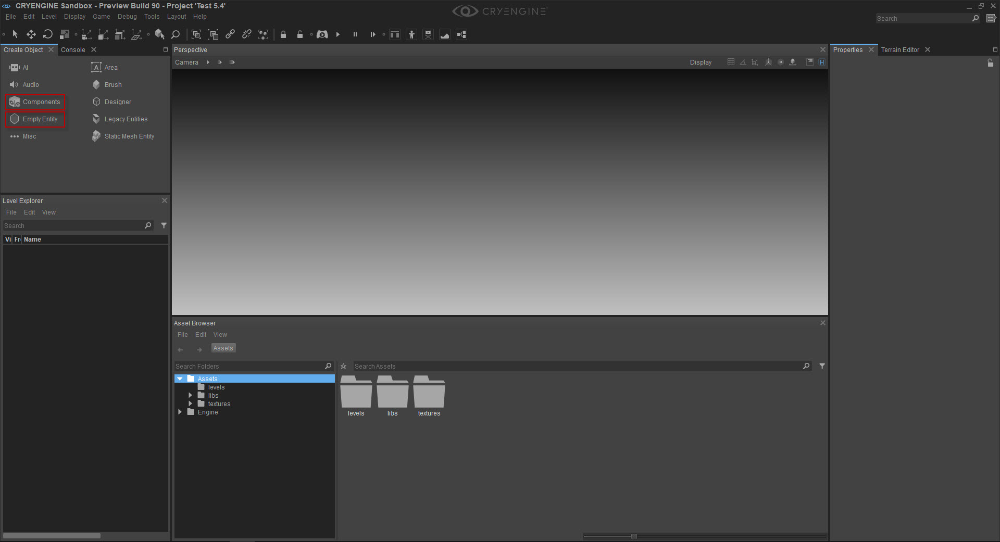

Overview
The Entity Component system removes the need for CRYENGINE game code to expose and manage Entities within a scene. Furthermore, the system has been designed to provide a modular and intuitive way for Developers to construct games, both at a system and at an Entity level.
The interaction model (within the Sandbox Editor) allows Developers to create empty (blank) Entity containers which in turn house the advanced game logic all wrapped into specific Components. Some examples of the base Components are: Mesh, Lights, Constraints and even Character Controllers. With these types of Components users can develop prefabs that can be placed by Level Designers throughout a game for both standardization and exposure to Schematyc for triggering and event updating.
Creating Entity Components
Steps for Entity Component Creation
- Open a new or an existing level File -> New or File -> Open
- You will require the Create Object Tool. If this is not visible in the top left-hand pane of the main window then you will need to reset the layout. To do this go to the Menu Bar Layout -> Reset Layout
In the image below we have opened an existing level in a Project named Test 5.4. Notice 1. the Create Object tool is open and 2. the Components and Empty Entity options in the Create Object tool.
- Entity Components can be created in two ways; 1. using the Components option or 2. the Empty Entity option. Which one you use is user and/or situation dependent. For example a user may choose the Empty Entity option and then add the required Components, or in the case where a user knows that they only require a Component, say an Audio Trigger, then they could select one from the Components option.
- Component Method. From the Create Object tool, left mouse click on the Components icon - this opens the Components menu. Then expand the relevant menu, select the required Component and then drag and anchor the Component into your scene (all with the left mouse button). The Component will be highlighted and the relevant parameters can now be set by the user.
Empty Entity method. From the Create Object tool, left mouse click on the Empty Entity icon and then drag and anchor the Entity into your scene (all with the left mouse button). The Empty Entity will be highlighted, but Components now need to be added (follow step 6 below).
The Properties Panel will be visible in the right-hand pane of the main window once the first Entity has been added to the scene, this is regardless of whether this was a Components or an Empty Entity type.- To add a component click on the + Add Component button - this opens all of the available components that can be added to the Entity (right-hand image below).

- Once a component has been selected, you can then select values for the various parameters according to your needs, of course the parameters will vary depending on the type of Component in question.
- Entity(s) can be edited at anytime (as long as they are highlighted) by left mouse clicking the Entity in question. Components as well as Entities can be deleted at anytime - this functionality is self-explanatory.
- Finally, when you have finished remember to save the level.